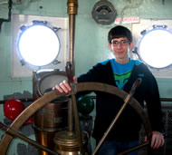
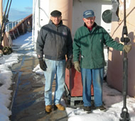

LV-112
Mission / Purpose
Home › Mission / Purpose
Mission Statement
Mission
The mission of the United States Lightship Museum (USLM) is to preserve and maintain Nantucket Lightship / LV-112 in perpetuity, reestablishing this National Historic Landmark in its homeport of Boston. It serves as a floating museum and learning center for the general public, chronicling the maritime history of the U.S. Lightship Service from its inception in 1820 to its end in 1985. Visitors will experience what lightship service was like for crewmembers living aboard these “floating lighthouses,” whose duty was to stay on their station regardless of conditions, faithfully and courageously guiding transoceanic commerce to and from the United States through dangerous seas.
Vision and Goals

The long-term goals of the United States Lightship Museum are two-fold. First and foremost, our objective is to preserve and protect the structural integrity of Nantucket Lightship / LV-112 — the largest and most famous U.S. lightship ever built — consistent with its use as a commissioned U.S. Coast Guard lightship vessel, based in Boston and stationed on the treacherous Nantucket Shoals from 1936 to 1975. The ship is shared with the public as a floating educational institution, including exhibits to illuminate the importance of the U.S. Lightship Service and its historic relevance to transoceanic commerce and transportation.
In addition, Nantucket Lightship / LV-112 serves as a catalyst for people to gain a broad understanding of maritime history and marine sciences. Much of what determines our future is learned from our past. The museum offers interactive programs in collaboration with various educational institutions, maritime and marine-science organizations. Through an engaging learning environment and hands-on programs, this 150-foot living museum engenders an appreciation of maritime history as well as contemporary marine and nautical sciences including engineering, navigational, environmental and weather sciences.
The museum reaches out to diverse populations of all backgrounds and ages. Instructors from learning institutions and youth groups coordinate with the museum, utilizing it as part of a customized curriculum for their students. In addition, the museum serves as a resource and field trip destination for groups such as special-needs individuals, inner-city children and senior citizens.
Among its long-term goals, the USLM aims to provide impetus for the establishment of a maritime center for Boston Harbor. The United States Lightship Museum is a 501(c)3 non-profit organization.